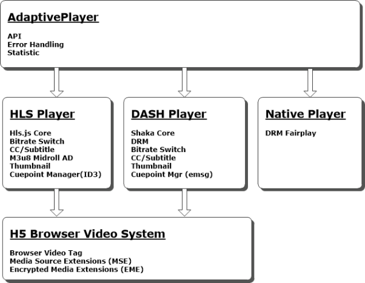
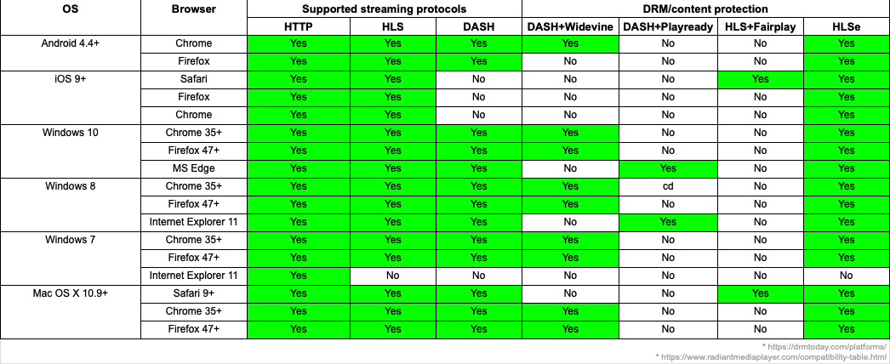

Introduction
Endeavor Streaming HTML5 Adaptive Player is based on Shaka-player for DASH, and hls.js for HLS.
Here is the architecture diagram:

- Streaming protocol:
- DASH with DRM protection
- HLS Stream with HLS-E protection and FairPlay (Safari only)
- HTTP video (MP4)
- Streaming core supported:
| HLS | DASH | |
|---|---|---|
| Chrome | hls.js | shaka-player |
| FireFox | hls.js | shaka-player |
| Opera | hls.js | shaka-player |
| Edge | hls.js | shaka-player |
| IE11 | hls.js | shaka-player |
| Safari | hls.js (Non-DRM) Native (DRM) |
shaka-player |
- Platforms vs browsers

Feature list
- VOD / CVOD / DVR / Live playback
- Adaptive and manual switch
- Additional subtitles and audios
- CC608 (DASH/HLS)
- Metadata Event (ID3, Emsg and cuepoint management)
- Error handling
- MultiCDN
- Thumbnails (HLS/DASH)
- HLS/DASH AD-Stitching (including native player on Mac Safari and iOS browsers)
Please refer to detailed requirements.
Tips
- Should use play and pause of player, can't use play and pause of video element.
- Metadata event will be removed after triggered, seek back will not re-trigger. (Fix later)